Très bien, voyons ce que Yuya faisait au cours de ces derniers événements !
Yugioh: The Power of Four
Après le départ de tout le monde, Yuya est monté dans sa chambre,
s'est écroulé sur son lit et commença a boudé. Il avait beau dire qu'il allait bien, sa mere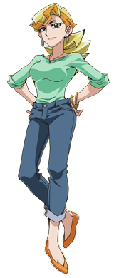
ne voulait pas en entendre parler. Il n'arrivait toujours pas à croire qu'il n'avait pas le droit de faire de duel pendant une semaine entière ! Il se battait en duel depuis des années,
et il n'avait jamais eu de problèmes jusqu'à maintenant. Il avait été élevé pour obtenir un corps athlétique et en bonne santé. Deux qualités nécessaires pour livrer des Actions Duels.
Yuya: Bon sang ! Je n'ai plus mal à la poitrine depuis hier. Je ne ressens aucune douleur !
Yuya s'est plaint à lui-même. Pourtant, même s'il se sentait bien, il ne pouvait s'empêcher de se demander ce qui avait causé sa douleur au départ. Et il ne comprenait
pas pourquoi il avait si mal. Même son médecin ne pouvait pas trouver la cause, ce qui rendait tout le monde encore plus inquiet pour Yuya. Alors que Yuya
lui-même était inquiet que cela se reproduise, il était sûr que ce qui lui avait fait mal n'avait rien à voir avec sa santé actuelle.
Soupirant, il decida que rester allongé sur son lit toute la journée ne lui ferait aucun bien. Il avait besoin de sortir et de prendre l'air. Peut-être une simple
promenade dans le parc ? Ce ne serait sûrement pas un problème. Il était sur le point d'aller demander la permission à sa mère, mais à sa grande surprise, elle est
venue frapper à sa porte.
Yoko: Yuya ? Je peux entrer ? Yoko a demandé à travers la porte.
Yuya: Bien sûr. Yuya a dit en se redressant sur son lit. Après être entrée, Yoko s'est assise à côté de son fils déprimé.
Yoko: Ecoute, je suis désolée si je suis injuste, Yuya. C'est juste que nous sommes tous inquiets pour toi, surtout moi. Je ne veux pas que ce qui t'est arrivé se
reproduise. Je sais plus que quiquonque que tu est l'un des garçons les plus sains que je connaisse, mais parfois des choses comme ça arrivent, que même un
médecin expérimenté ne peut expliquer.
Yuya: Je sais maman. Mais le fait de ne pas pouvoir faire de duel ne signifie pas que je doive rester enfermé ici tout le week-end, n'est-ce pas ?
Yuya a demandé, espérant que sa mère serait ouverte à sa requête.
Yoko: Bien sûr que non. Yoko a répondu en secouant la tête.
Yoko: Tu peux faire d'autres activités qui n'impliquent pas de te dépenser physiquement. As-tu une idée en tête ?
Yuya s'agita un peu avant de demander.
Yuya: Peut-être juste une... promenade dans le parc ? Il demanda timidement.
Yuya: Je sais ce que tu penses, mais je ne ferai que marcher, je ne courrai pas ! Je promets de marcher lentement tout le temps ! S'il te plaît !
Yoko semblait sur le point de protester, mais elle a vu combien son fils avait l'air misérable. Elle voyait bien que Yuya voulait vraiment sortir de la maison. Yoko a
soupiré, sentant qu'elle pourrait regretter son choix.
Yoko: Très bien, Yuya. Une promenade lente dans le parc, alors. Yuya a alors serré sa mère dans ses bras en signe de gratitude.
Yuya: Merci maman !
Disait Yuya, se sentant déjà plus heureux, ce qui fait sourire Yoko. Elle a ensuite regardé une photo sur le bureau de Yuya avec elle, Yuya et son mari.
Yusho lui manquait vraiment, et elle savait qu'il s'inquiéterait
aussi de l'état inconnu de Yuya. Cependant, il veillerait à ce que Yuya reste heureux, même si les choses allaient mal. Sachant cela, elle a donné à Yuya une
bouteille d'eau et quelques fruits secs et noix comme collation pendant son absence.
Yoko: Rappelle-toi Yuya, une marche lente seulement. Et surtout, ne fais RIEN qui puisse être sportif ! Yoko a prévenu. Yuya lui hoché la tête.
Yuya: J'ai compris. Merci encore maman ! Je reviendrai bientôt !
Sur ce, Yuya partit pour le parc, qui en fait n'était pas loin de son domicile. Il a été autorisé d'apporter son Duel Disk, avec la promesse qu'il ne l'utiliserait pas
pour des duels, mais seulement pour des appels téléphoniques et des messages vidéo. Yoko lui a souri avant de refermer la porte derrière elle en rentrant.
Chapitre 7: Une rencontre guidée par le destin. Yuya VS Yuri.
Après avoir atteint le parc peu de temps après, Yuya prit un chemin qui longeait les bords. Tout en marchant, Yuya respirait les parfums frais des fleurs roses de la
région. Il ne savait pas pourquoi, mais ces fleurs lui rappelaient la présence de
Yuzu. Il semblait toujours associer
Yuzu aux fleurs. Il sourit à cette pensée tout en continuant sa promenade.
Yuya: Je souris toujours quand Yuzu est là. Elle a été très présente pour moi, surtout pendant les années qui ont suivi la disparition de mon père. Je ne peux pas
imaginer ma vie si elle n'était pas là. J'aimerais juste que Yuzu ne me frappe pas avec son éventail quand je dis quelque chose qui la contrarie. Pourtant, elle
est l'une des meilleures choses dans ma vie. Peut-être, la meilleure...
Il a ensuite commencé à secouer la tête.
Yuya: Ah, à quoi je pense ? Yuzu est l'une de mes meilleures amies d'enfance. Et maintenant, pour une raison quelconque, je pense à elle comme éant à plus que ça.
Qu'est-ce qui me prend ?
Pensait Yuya, l'air agacé et confus.
Yuya: Reprends-toi, Yuya. Yuzu est juste une amie.
Il a alors pensé à la fois à la journée où Sora le harcelait et avait pris Yuzu pour la petite amie de Yuya. La remarque de Yuya sur le fait qu'il ne pourrait jamais
sortir avec une fille aussi rude comme elle lui a valu une bonne gifle de la part de l"éventail en papier de Yuzu.
À l'époque, il n'avait pas vraiment pensé à sortir avec quelqu'un, et encore moins avec Yuzu. Il ne la voyait pas comme ça.
Yuya: Se pourrait-il que quelque chose en moi... ait changé ? Quelque chose qui me fait... penser à elle différemment ?
Yuya n'avait aucune idée de l'origine de ces nouvelles pensées.
En y réfléchissant bien, il s'est rappelé un souvenir très récent avec Yuzu. Lorsqu'il s'est réveillé à l'hôpital après sa douloureuse crise, à part sa mère, Yuzu a
été la première personne qu'il a vue se tenir au-dessus de lui. Il a vu combien elle était heureuse et soulagée qu'il soit à nouveau réveillé. Elle a également pleuré
un peu, reprochant légèrement à Yuya de l'avoir fait s'inquiéter de la sorte. Quand il l'a vu la première fois, il a ressenti quelque chose qu'il n'avait jamais
ressenti auparavant.
Yuya avait mis une main sur l'endroit où se trouvait son coeur. Non pas parce qu'il avait de nouveau mal, mais parce que ce "quelque chose" avait commencé à le
harceler et qu'il n'arrivait pas à savoir ce que c'était. Quoi qu'il en soit, cela faisait battre le coeur de Yuya un peu plus vite quand il a commencé à penser à Yuzu.
Il a alors commencé à secouer sa tête.
Yuya: Ah ! Bon sang, arrête ça ! Je ne suis pas censé avoir le coeur qui s'emballe ici ! Je l'ai promis à maman !
Yuya s'est plaint à lui-même. Il souhaitait qu'il y ait quelque chose qui puisse détourner son esprit de son nouveau dilemme personnel.
Curieusement, son souhait a été exaucé lorsqu'il a aperçu quelqu'un qui sautait d'un arbre près d'une plate-forme de spectacle.
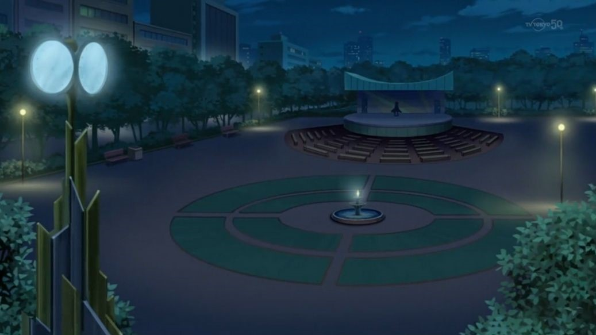
Il s'est ensuite assis et a regardé autour de lui comme s'il s'attendait à ce que quelqu'un le rejoigne. Curieux, Yuya se cacha derrière l'arbre le plus proche pour
voir. L'étranger ne semblait pas le remarquer.
Alors qu'il attendait sur la plate-forme, Dennis
était convaincu que Hiragi Yuzu ne s'échapperait pas comme les autres filles au bracelet. Avec Edo Phoenix
et l'l'Obelisk Force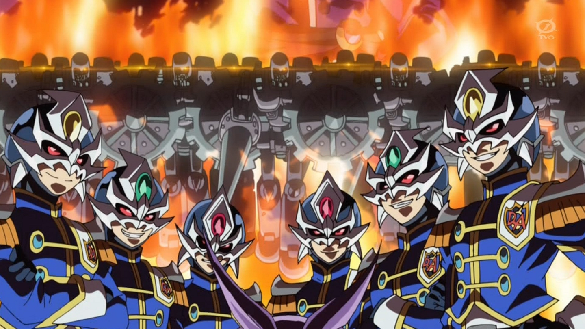
à sa disposition, il savait que ce ne serait qu'une question de temps avant que
Sora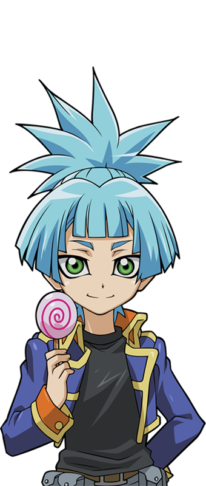
ne soit vaincue et scellé dans une carte.
Il avait de la peine pour le petit gars. Sora était un jeune Soldat duelliste prometteur qui, pour une raison ou une autre, s'était un peu trop attaché à la fille que
le Professeur devait capturer.
Dennis: Pauvre Sora. Il a dû developper une affection pour cette Yuzu. Et ca ne fais pas longtemps qu'il est dans cette dimension. Pensa ce dernier.
Dennis soupira de pitié. Il pouvait le comprendre. En fait, il a développé une affection assez similaire à la sienne. Cela concernait la fille au bracelet de la dimension Xyz,
Ruri. Elle était gentille, attentionnée, et
aimait faire sourire les autres. Un peu comme lui. Peut-être que s'il avait passé plus de temps dans la dimension Xyz, il aurait pu faire comme ce que Sora essayait de faire.
Bien sûr, Dennis n'était ni jeune et n'était pas aussi naïf. Même s'il aimait s'amuser, et qu'il avait vraiment apprécié de divertir Ruri lors de leur duel, il ne
pouvait pas abandonner sa mission pour Academia... ou le Professeur.
Dennis: Le Professeur a clairement dit que la capture de ces filles était une priorité absolue. Mais, quelle priorité ? Pourquoi ces filles sont-elles si spéciales
pour lui ? Les seules choses qu'elles semblent avoir en commun sont qu'elles ont le même visage que
Serena
et qu'elles ont toutes un bracelet comme le sien. J'aimerais bien savoir ce que...
Les pensées de Dennis ont été interrompues lorsqu'une silhouette est apparue instantanément à côté de lui dans un tourbillon d'énergie. Dennis a levé les yeux et a souri.
Disait Yuri en s'asseyant à côté de Dennis. Alors qu'ils se saluaient, ils ne se doutaient pas qu'ils étaient observés par quelqu'un ressemblant à Yuri.
Dès qu'il vu Yuri, les yeux de Yuya ont failli sortir de ses orbites, et sa mâchoire a failli tomber au sol. Il n'arrivait pas à croire ce qu'il voyait. Il a été assez
surpris quand le deuxième étranger est sorti de nulle part comme il l'a fait. Mais le fait que cette nouvelle personne ait exactement le même visage que lui a failli
le faire s'évanouir de stupeur.
Yuya: Ce type ! Il me ressemble... tout comme moi ! Je dois voir des choses !
Yuya s'est rapidement, mais silencieusement, pincé fort pour s'assurer qu'il n'hallucinait pas. Quand il regarda à nouveau, rien n'avait changé. L'adolescent aux
cheveux violets lui ressemblait toujours autant.
Yuya: Mais pourquoi ? Pourquoi y a-t-il quelqu'un qui me ressemble ? ! Mais qui est-il bon sang !?
Aussi abasourdi qu'il était, Yuya a tout de même essayé d'écouter ce dont ces deux-là parlaient.
Yuri: Alors, c'est ici que je suis censé attendre, hein ? Yuri demanda en regardant autour de lui.
Dennis: D'après les souvenirs de Sora, c'est l'endroit et le moment idéal où il n'y a personne. Et heureusement, ce n'est pas loin de la zone où se déroule l'action.
J'espère que tu n'auras pas à attendre longtemps. Edo va bientôt te donner le signal.
Yuya: Quoi ? Ils connaissent Sora ? Comment ?
Yuya s'est demandé tranquillement. Il pensait qu'ils devaient venir de l'endroit où Sora avait appris l'Invocation Fusion. Après tout, cet enfant ne lui a donné aucun
détail. Il se demandait aussi qui était cette personne, Edo.
Yuri: Vraiment Dennis ? Je vais m'ennuyer très vite s'il n'y a personne pour jouer avec moi.
Répondit Yuri, l'air de s'ennuyer. Dennis gloussa.
Dennis: Je comprends. Je te demanderais bien si on peut se battre en duel pour passer le temps, mais je sais comment ça va se terminer. Je n'ai aucune chance contre
toi, Yuri.
Yuri gloussa à son tour.
Yuri: Hehe, oh sans aucun doute. Il s'est ensuite tu et a baissé les yeux, en fronçant les sourcils. Dennis l'a remarqué.
Dennis: Hé, qu'est-ce qu'il y a ? Tu es vraiment déçu que je ne veuille pas qu'on se batte en duel ?
Dennis a demandé, en taquinant son camarade. À sa grande surprise, Yuri secoua la tête.
Yuri: Ce n'est pas ça. C'est juste que les choses ne vont pas bien pour moi ces derniers temps. D'abord, ces deux types qui m'ont pris par surprise quand j'ai
essayé de capturer ces filles, Ruri et
Rin. Je n'ai même pas vu le bâtard qui m'a eu par derrière. Mais ces deux incidents n'étaient rien comparés au moment où j'ai affronté le gars qui a aidé Serena à s'échapper... Yuki Judai.
Yuya n'avait aucune idée de qui étaient les personnes dont Yuri parlait. Ce qui a attiré son attention, c'est qu'il a essayé de kidnapper deux filles et qu'il a
apparemment échoué. Et une autre, Serena, a également réussi à s'échapper. Il pouvait dire que Yuri n'était pas une bonne personne, même s'il lui ressemblait. Quand
il a mentionné ce type, Yuki Judai, le ton de Yuri a changé. On aurait dit qu'il avait peur de ce type. La déclaration suivante de Yuri l'a confirmé.
Yuri: Lorsqu'on s'est confronté dans cette cachette, j'ai ressenti une peur écrasante que je n'avais jamais connue dans ma vie. Je n'avais jamais eu peur de
personne jusqu'à maintenant. Et la façon dont il m'a jeté comme si j'étais une poupée de chiffon...
Il a ensuite regardé Dennis droit dans les yeux.
Yuri: Je te le dis, ce Judai n'était pas une personne normale. Peut-être que les gars avec qui il travaille ne sont pas normaux non plus. Quoi qu'il en soit, et
qui qu'ils soient...
Yuri a alors semblé plus en colère.
Yuri: Ils vont tous payer pour m'avoir humilié ! Il a presque hurlé en serrant les poings.
Yuya pouvait voir que Yuri n'était pas quelqu'un qu'il fallait énerver. D'après ce qu'il avait entendu, trois personnes l'avaient déjà fait... et Yuri voulait se
venger d'elles. Dennis a tapoté l'épaule de Yuri.
Dennis: Hé, je suis sûr que tu auras ta chance de te racheter. N'oublie pas, nous ne nous sommes pas encore complètement battus. Il reste encore une fille qui ne
nous a pas encore échappé. Avec le nouveau plan du Professeur, je suis sûr que tout va bien se passer.
Après avoir pris un moment pour se calmer, Yuri lui souria de nouveau.
Yuya a vu que ce n'était pas un sourire amical. Il s'est également inquiété du fait qu'une autre fille était sur le point d'être kidnappée. Qui que soit ce Professeur,
Yuya pensait qu'il devait être dangereux. Il a senti qu'il devait faire quelque chose. Il devait rentrer à la maison et dire à sa mère ce qu'il venait de voir et
d'entendre. Pourtant, il est resté où il était et a continué à écouter. Peut-être pourrait-il entendre le nom de la fille en question. L'instant d'après, Yuya s
ouhaitait ne pas avoir entendu ce que Yuri avait dit.
Yuri: J'espère que tu as raison Dennis. Edo ferait mieux de faire son travail correctement et d'arrêter le traître, que ce soit grâce à l'Obelisk Force ou de ses
propres main. Quoi qu'il en soit, je vais certainement amener Hiragi Yuzu au professeur et j'espère revenir dans ses bonnes grâces.
Il déclara avec un gloussement malsain.
Yuya: Yuzu !? Il compte kidnapper... Yuzu !?
Yuya s'est senti à la fois choqué, effrayé et furieux. Il n'avait aucune idée de de l'émotion qu'il ressentait le plus. Il serra les poings, montra ses dents et tout
son corps se mit à trembler.
Yuya: NON ! JE NE LE LAISSERAI PAS FAIRE !
Faisant fi de toute prudence, Yuya a finalement décidé d'affronter le monstre qui partageait son visage.
Dennis était content que Yuri semble être d'humeur plus joyeuse.
Dennis: Ça, ça ressemble au Yuri que je connais ! Celui qui anticipe joyeusement la capture de sa prochaine proie.
Yuri lui a adressé un sourire au coin.
Yuri: Tu crois ? Peut-être que cette fois nous n'aurons pas de surprises...
Yuya: TU N'EMMÈNERAS YUZU NULLE PART !
Yuri et Dennis se levèrent d'un bond, surpris, lorsqu'ils entendirent une nouvelle voix furieuse leur crier dessus. Ils ont ensuite vu le propriétaire de cette voix
sortir de derrière un arbre voisin. A leur grande surprise, c'était un garçon qui ressemblait fortement à Yuri. Et ils pouvaient dire que le nouveau gars était furieux
comme jamais.
Dennis: Tu ne venais pas de dire qu'on n'auraient plus eu de surprises ?
Dennis a demandé en jetant un coup d'oeil à un Yuri abasourdi.
Yuri: Tais-toi. Yuri disait doucement. Yuya s'est approché d'eux, sans se soucier de ce qui lui arrivait.
Yuya: J'ai entendu tout ce que vous avez dit tous les deux, y compris la partie où vous prévoyez de kidnapper Yuzu ! Je ne vais pas laisser cela se produire ! Je
ne vous laisserai pas poser un seul doigt sur elle ! Affronte-moi en duel, Yuri !
Yuya s'est mis en colère, enfila son Duel Disk et l'activa. Il savait qu'il ne tenait pas la promesse faite à sa mère, mais vu les circonstances, il n'avait pas le
choix. Yuri semble amusé, tandis que Dennis était curieux.
Dennis: Alors, tu vas vraiment te battre en duel contre ton sosie ?
Dennis demanda. Yuri sauta à terre et enfila son propre Duel Disk, se tenant maintenant devant Yuya.
Yuri: Je ne vois pas pourquoi je ne le ferais pas. Au moins, je ne vais pas rester assis à me tourner les pouces en attendant qu'Edo me contacte.
Il le disait en activant son Duel Disk. Dennis hocha la tête en signe d'accord.
Dennis: Bien, amuse-toi bien, Yuri ! Je vais voir comment les choses se passent du côté d'Edo !
Sur ce, Dennis commença à sauter d'arbres en arbres et fut hors de vue. Yuya s'inquiéterait de Dennis plus tard. Pour l'instant, sa principale préoccupation était le
gars devant lui qui arborait un sourire malicieux.
Yuri:Alors, tu veux m'affronter en duel pour protéger Yuzu ? Je suppose que c'est ta petite amie ? Yuri s'est moqué. Yuya rougit un peu tout en répondant.
Yuya: Yuzu est juste une amie ! Mais elle est très spéciale pour moi ! Je ne vais pas te laisser la prendre ! Rétorqua Yuya. Yuri gloussa de nouveau.
Yuri: Quelle galanterie de ta part. Quel est ton nom ?
C'est Yuya ! Sakaki Yuya ! Yuya a répondu avec force. Yuri a alors souri comme un prédateur sur le point de traquer sa proie.
Yuri: Eh bien, Sakaki Yuya, montre-moi si tu as les compétences nécéssaires pour valider tes affirmations !
Yuya: Crois-moi Yuri, je le ferais !
Aussitôt, leur duel du destin a commencé.
“DUEL !”
(Yuya: 4000 LP)(Yuri: 4000 LP)
Yuri: Et si je te laissais prendre le premier tour ? Annonça Yuri, confiant qu'il allait l'emporter.
Yuya: J'utilise “Entermate Drumming Kong ”
d'échelle 2 et “Tokiyomi no Majutsushi ”
d'échelle 8 pour fixer les échelles Pendulum. Je peux maintenant invoquer simultanément des monstres de niveau 3 à 7.
Yuya commenca son tour. D'un côté du Champ de Yuya, un gorille avec des tambours imposants flottait dans une colonne lumineuse. De l'autre côté, un magicien vêtu d'une
tenue marron et tenant ce qui semblait être un Duel Disk était suspendu dans une colonne similaire.
Yuri: Des échelles Pendulum ? S'interrogea Yuri, se demandant ce que faisait son adversaire.
Yuya: Balance-toi, pendule des âmes ! Dessine dans le ciel un arc de lumière ! Pendulum Shōkan ! Montre-toi, toi dont les héroïques yeux bicolores brillent d'un
éclat magnifique !
“Odd Eyes Pendulum Dragon ”
!
Un féroce dragon rouge à cornes avec un œil rouge et un œil vert, des ailes légèrement bronzées incrustées d'orbes rouges et vertes se tenait maintenant devant son
maître, prêt pour la bataille.
Yuya: Je termine mon tour.
Yuri en est resté bouche bée.
Yuri: Pendulum Shōkan ? Je n'ai jamais entendu parler d'une telle méthode d'invocation ! Incroyable ! Et ton dragon... Trop cool !
Je vois que tu deviens déjà sérieux ! Dans ce cas, moi aussi je dois tout donner !
Disait-il avec enthousiasme. Yuri s'émerveillait devant la bête qui se trouvait devant lui.
Yuya: Tais-toi et commence ton tour !
Yuya a crié d'impatience. Il ne se souciait pas de ce que Yuri pensait de son dragon ou même de son invocation pendule. Tout ce qui l'intéressait, c'était d'empêcher
ce psychopathe de s'approcher de Yuzu. Yuri ricana.
Yuri: Tu es si impatient, hein ? Très bien. A mon tour ! Draw !
Ses yeux s'écarquillèrent légèrement, sachant qu'il pouvait invoquer "lui" maintenant. Il a été momentanément distrait par une lumière violette clignotante sur son
disque de duel. Il savait que ce devait être le signal d'Edo. Cela signifiait que Yuzu Hiragi devait être en sécurité à ce moment-là. Il devait aller la capturer
maintenant... mais il a choisi de ne pas le faire. Il ne savait pas pourquoi, mais il sentait qu'il devait se battre en duel contre Sakaki Yuya. Quelque chose au fond
de lui le disait, non "le suppliait", d'affronter le garçon qui avait son visage. C'était comme un instinct qu'il ne pouvait ignorer. Edo devrait attendre que le duel
de Yuri soit terminé, il refusait de remettre cela à plus tard.
Yuya: Qu'est-ce que tu attends ? Dépèche-toi de commencer ! Yuri recentra son attention sur son adversaire.
Yuri: Ne sois pas si pressé. Tu pourrais le regretter, et voici pourquoi ! J'active ma carte magie
“Yugo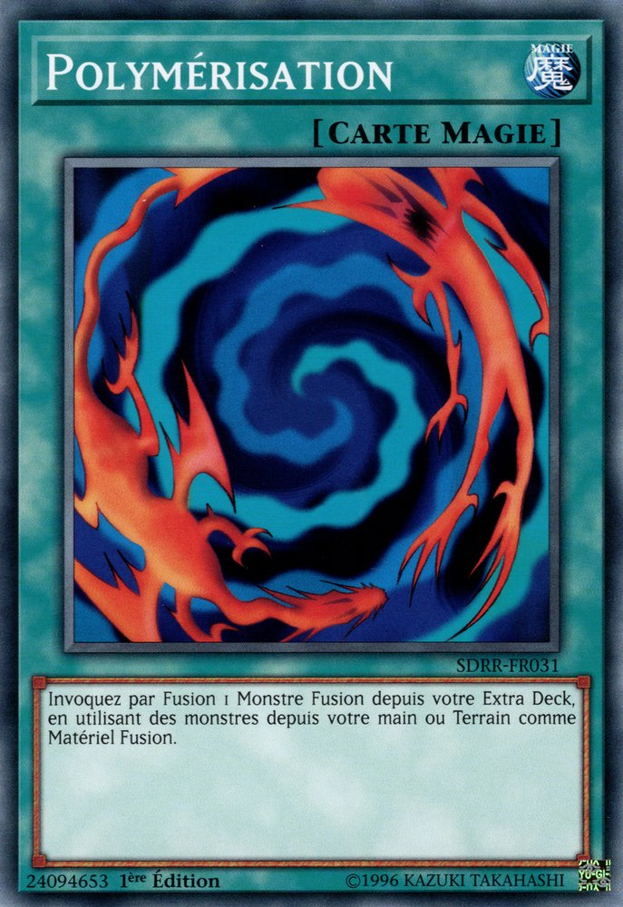 ”
et je fais fusionner “Predator Plants Fly Hell ”
et “Predator Plants Moray Nepenthes ”
que j'ai en main pour effectuer une invocation fusion. Vous, mes deux magnifiques fleurs dont le séduisant parfum attire les insectes ! Combinez-vous et que l'enfer caché
derrière vos pétales donne naissance à une nouvelle menace ! Yugo Shokan ! Montre-toi, dragon poison aux crocs affamés ! Niveau 8,
“Starve Venom Fusion Dragon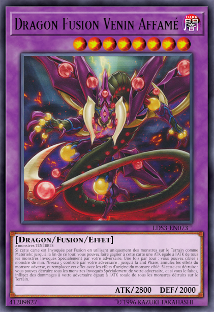 ” !
Face au “Odd Eyes ” de
Yuya, se tenait un dragon violet foncé avec des cornes comme “Odd Eyes ”,
mais inversées. Il était également couvert d'orbes jaune foncé et violet clair et avait une queue à pointe mortelle.
Les deux dragons ont alors rugi l'un contre l'autre, comme s'ils se défiaient de se battre jusqu'à la mort. Ils ont également commencé à dégager des auras puissantes
en criant.
Au même moment, Yuya et Yuri ont senti une douleur aiguë dans leur poitrine. Yuya est presque tombé à genoux.
Yuya: Pas encore ! Pas maintenant ! Pensait-il, paniqué, en essayant de ne pas succomber à la douleur.
Yuya: Je dois protéger... Yuzu !
Sans prévenir, le bracelet de Yuzu s'est mis à clignoter en rose. Cela a vraiment surpris Yuzu et Sora.
Sora: Qu'est-ce qui se passe avec ton bracelet ? A demandé Sora. Yuzu, surprise, a secoué la tête, complètement déconcertée.
Yuzu: Je n'en sais rien. Il n'a jamais fait ça avant. Pourquoi fait-il ça ?
Elle a alors levé les yeux pour demander à Yugi
s'il savait, mais son regard lui a dit que ce n'était pas une bonne chose. Ce n'était pas seulement lui.
Judai,
Yusei,
Yuma, et même
Astral
(qu'elle ne pouvait pas voir) avaient l'air extrêmement alarmés.
Yuzu: Qu'est-ce qui ne va pas Yugi ?
Demanda Yuzu, qui semblait maintenant effrayée. Lui et ses amis se sont regardés et ont su instantanément ce que cela signifiait.
Atem (Yami Yugi): Yuzu, sais-tu si Yuya est toujours chez lui ?
Demanda Yugi avec insistance. Cette question les a stupéfiés, elle et Sora.
Yuzu: Yuya ? Qu'est-ce que Yuya a à voir avec mon bracelet ?
La question de Yugi l'a fait paniquer, plus qu'elle ne l'avait jamais fait dans sa vie.
Atem (Yami Yugi): J'ai bien peur que Yuya... soit en grand danger. Appele-le maintenant !
Yugi l'a fortement encouragé. Aussitôt, Yuzu sortit son Duel Disk et composa rapidement le numéro de Yuya. Au lieu de sonner, un message s'est affiché sur son écran au centre.
"Destinataire impossible à joindre. Duel en cours."
Cela a vraiment choqué Yuzu sur ce coup.
Yuzu: QUOI !? Yuya se bat en duel en ce moment même !? Il n'est pas censé faire ça ! A quoi pense cet idiot !?
Elle a crié avec colère et incrédulité. Elle a ensuite essayé d'appeler la mère de Yuya. Heureusement, elle a décroché.
Yoko: Allô ? Demanda Yoko quand elle répondit.
Yuzu: Mme. Sakaki, c'est Yuzu ! Dites-moi, est-ce que Yuya est toujours là !? J'ai besoin de lui parler maintenant ! C'est important !
Yuzu a demandé précipitamment. Yoko, plus alerte après avoir entendu le ton de la voix de Yuzu, a agi plus sérieusement.
Yoko: Non. Je suis désolé, mais Yuya est allé se promener tranquillement dans le parc peu de temps après que toi et les autres avez quittés notre maison. Il n'est pas encore rentré. Tu n'as pas pu le joindre ?
Elle a demandé, semblant maintenant inquiète.
Yuzu: J'ai essayé, mais mon Duel Disk m'indique que Yuya était au milieu d'un duel ! Je n'ai pas réussi à le joindre !
Yuzu a répondu. À ce moment-là, Yoko est devenue furieuse
Yoko: Il a quoi !? J'ai dit à Yuya qu'il n'avait pas le droit de se battre en duel pendant une semaine ! Je ne peux pas croire qu'il ait désobéi dans mon dos
comme ça ! Ramène-le à la maison tout de suite, Yuzu ! Quand il reviendra, je le punirai pendant un an !
Yoko a pratiquement crié avant de raccrocher. Yuzu était définitivement inquiète maintenant et elle se tourna vers Yugi et les autres.
Yuzu: Yuya n'est pas à la maison ! Sa mère a dit qu'il est allé au parc, et qu'apparemment il est en train de se battre en duel avec quelqu'un là-bas !
Yusei: Nous devons aller au parc maintenant ! Avant qu'il ne soit trop tard ! Disait Yusei alors que tout le groupe se met à courir.
Sora et Yuzu: Trop tard pour quoi ? Demandèrent Sora et Yuzu en essayant de suivre le rythme.
Yuma: Si nous n'atteignons pas Yuya à temps, les choses vont très mal tourner pour lui.
Yuma a répondu de manière sinistre. L'inquiétude de Yuzu et Sora pour Yuya augmenta encore plus, pensant que sa vie pouvait être en danger une fois de plus. Yugi et
les autres se sont regardés les uns les autres. Si Yuya se battait en duel avec quelqu'un en ce moment, alors cela ne pouvait être qu'avec "cette personne". Et ils
savaient que Yuya, combattant cette personne était la raison pour laquelle le bracelet de Yuzu se déclenchait.
Judai: Une question Yuzu. Judai commença à lui parler alors qu'ils couraient.
Yuzu: Qu'est-ce que qu'il y a, Judai-san ? Yuzu demanda.
Judai: Tu viens de dire que Yuya n'avait pas le droit de se battre en duel. Pourquoi ça ?
Judai a demandé. Cela rendit le reste du groupe tout aussi curieux, à l'exception de Yugi et Sora. Yuzu grimaça.
Yuzu: Hier, Yuya a eu ce qui ressemblait à une crise cardiaque ! Un instant, il allait bien, et l'instant d'après, il a attrapé son cœur et s'est mis à hurler à
l'agonie ! Cela ne lui est JAMAIS arrivé de toute sa vie ! Si Yugi n'était pas arrivé et ne l'avait pas soigné, Yuya aurait pu mourir !
Judai, Yusei et Yuma se sont tournés vers Yugi, alarmés.
Yuma: Yugi, est-ce que c'est vrai ?
Yuma demanda à Yugi. Ce dernier hocha la tête pour confirmer.
Atem (Yami Yugi): Oui. J'allais en parler lors de notre rencontre prévue, même si je ne m'attendais pas à quelque chose comme ça.
Yuzu a ensuite continué son histoire.
Yuzu: Eh bien, après l'incident, Yuya a été emmené à l'hôpital ! Le médecin n'a rien trouvé d'anormal à son coeur, alors il l'a laissé rentrer chez lui ! Sa mère
lui a alors interdit de faire des duels pendant une semaine, par précaution ! Elle ne voulait pas que Yuya fasse quoi que ce soit qui augmente trop son rythme
cardiaque ! Pourquoi diable Yuya aurait-il fait ça ?
Disait Yuzu, inquiète et furieuse contre son ami.
Yugi et ses amis savaient qu'ils devaient trouver Yuya avant que l'impensable ne se produise. Ils priaient pour pouvoir atteindre le pauvre garçon à temps.
Atem (Yami Yugi): Yuya, accroche-toi ! On arrive ! Yugi pensait, en espérant qu'il ne serait pas trop tard...
De retour dans le parc, Yuya a remarqué que Yuri avait aussi attrapé sa poitrine. Ça l'a vraiment surpris.
Yuya: Tu...tu as mal toi aussi ? Yuya demanda douloureusement. De l'autre côté, Yuri était surpris que cela lui arrive à nouveau.
Yuri: Cette douleur... c'est la même... qu'avant... !
Il s'est alors souvenu de la première fois où il avait souffert de la sorte. Quand il s'est réveillé dans la Dimension Synchro après avoir été assommé, Yuri s'est rendu
compte que Rin et son agresseur n'étaient nulle part. Il était complètement seul.
Il s'est dit qu'il avait dû rester inconscient pendant une heure environ. Il frappa sur un mur, agacé qu'une autre fille lui ait échappé, tout comme dans la dimension
Xyz. Yuri allait devoir fouiller toute la ville pour retrouver Rin. Et quand il l'aura retrouvée, elle et le voyou qui l'a aidée, il lui ferait regretter de s'être
frotté à lui.
Yuri était sur le point de partir lorsqu'une douleur inattendue est apparue dans sa poitrine. Il porta une main à l'endroit où se trouvait son cœur et se mit à hurler,
tandis que ses yeux devenaient violets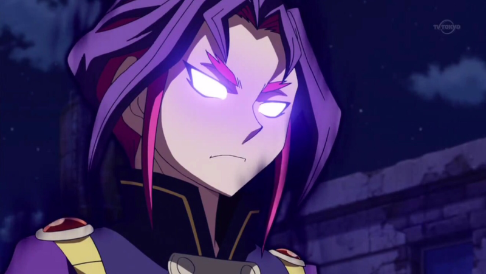. De toute sa vie,
il n'avait jamais souffert d'une telle chose. C'était une pure torture. La douleur était telle qu'il est tombé sur le sol et se roula en hurlant.
Il ne sait pas combien de temps cela a duré, mais aussi soudainement que la douleur est apparue, elle s'est dissipée. L'expérience lui a fait perdre conscience à
nouveau. Il a ensuite été réveillé par un type aux cheveux violets et bleus herisses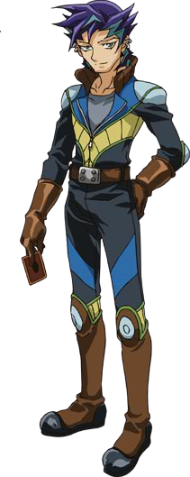.
(nDc: Il s'agit d'un perso secondaire de l'anime Arc-V. Il se nomme Shinji Weber.)
Shinji Weber: Hey, tu vas bien ? Ce dernier demanda. Yuri l'a repoussé alors qu'il se levait.
Yuri: Laisse-moi tranquille !
Yuri lui disait d'un ton irrité alors qu'il se mettait en route pour retrouver Rin et son protecteur. Bien sûr, il ne les trouva jamais et fut obligé de retourner à
Academia les mains vides une fois de plus. Après cela, la douleur n'est jamais revenue jusqu'à aujourd'hui. Il n'en a parlé à personne, pas même au professeur.
Il refusait de montrer sa faiblesse devant cet homme ou aux autres.
Lui aussi a remarqué que Yuya souffrait de la même chose que lui. Il n'arrivait pas à y croire.
Yuri: Alors... toi aussi, hein ?
Yuya: Pourquoi est-ce qu'on souffre tous les deux ?
Yuri: Je ne sais pas, mais il semble que nous ayons... plus en commun... que notre apparence.
Yuri a alors levé les yeux vers les dragons. Ils rugissaient toujours l'un sur l'autre, voulant se battre.
Yuri: Regardes nos dragons ! Ils veulent vraiment se battre entre eux ! Ils veulent se mettre en pièces !
Disait Yuri, semblant excité à cette idée.
Il détestait l'admettre, mais Yuya ressentait la même chose chez son propre dragon. Il n'avait aucune idée de ce qui se passait entre lui, Yuri, ou leurs dragons. Tout
ce qu'il savait, c'était qu'il devait terminer ce duel rapidement et rejoindre Yuzu.
Starve Venom déploya alors ses ailes et lança une décharge d'énergie empoisonnée sur Odd-Eyes. Heureusement, Yuya était préparé.
Yuya: J'active l'effet Pendulum de
“Entermate Drumming Kong ”
. Lorsqu'un monstre que je contrôle combat un monstre de l'adversaire, celui-ci gagne 600 Points d'Attaque jusqu'à la fin de la Battle Phase ! J'augmente les points d'attaques de
“Odd Eyes ” !
“Odd Eyes ” a ensuite
lancé sa propre attaque enflammé afin de repousser l'attaque de “Starve Venom ”.
Yuya: Et maintenant, j'active l'effet de
“Odd Eyes Pendulum Dragon ”
. Lorsqu'il affronte un monstre de niveau 5 ou plus, les dommages de combat sont doublés. Reaction Force !
Une énergie rouge s'est mélangée à l'attaque de Odd-Eye et a repoussé celle de Starve Venom. À la surprise de Yuya, Yuri commenca à rire.
Yuri: Ku hu hu hu hu hu, Ha Ha Ha Ha Ha !
Yuya: Qu'est-ce qu'il y a de si drôle ?
Les yeux de Yuri se sont alors formés en fentes et souriait malicieusement.
Yuri: Tu viens de faire une énorme erreur, Yuya ! En détruisant mon dragon, tu viens de déclencher son propre effet ! Révéla ce dernier.
Yuya: J'ai fait quoi ?
S'exclama Yuya, redoutant le genre d'effet que pouvait avoir “Starve Venom ”.
Yuri: J'active l'effet de
“Starve Venom Fusion Dragon ”
.
Lorsque qu'il est détruit, tous les monstres invoqués spécialement sur ton terrain le sont également ! Mais il y a pire ! Tu subiras également des dégâts équivalents
au total des points d'Attaque de tous tes monstres détruits.
Yuya: La puissance d'Attaque de “Odd Eyes ”
est de 3100, cela veut dire que... !
Yuya réalisa, horrifié.
Yuri: C'est exact ! Tu va subir 3100 points de dégâts !
Au moment même où il disait cela, “Starve Venom ”
se faisait exploser par l'attaque enflammé de “Odd Eyes ”.
Puis, “Odd Eyes ”
lui-même s'est désintégré dans l'explosion causée par la destruction de “Starve Venom ”.
L'explosion qui en a résulté a projeté Yuya en arrière. Il hurla en se cognant violemment le dos contre un arbre avant de tomber face contre terre.
Yuri: Ça a dû faire mal. Oh, et si tu pensais que c'était la dernière fois que tu voyais mon dragon, et bien tu te trompes. Je joue “Shisha Sosei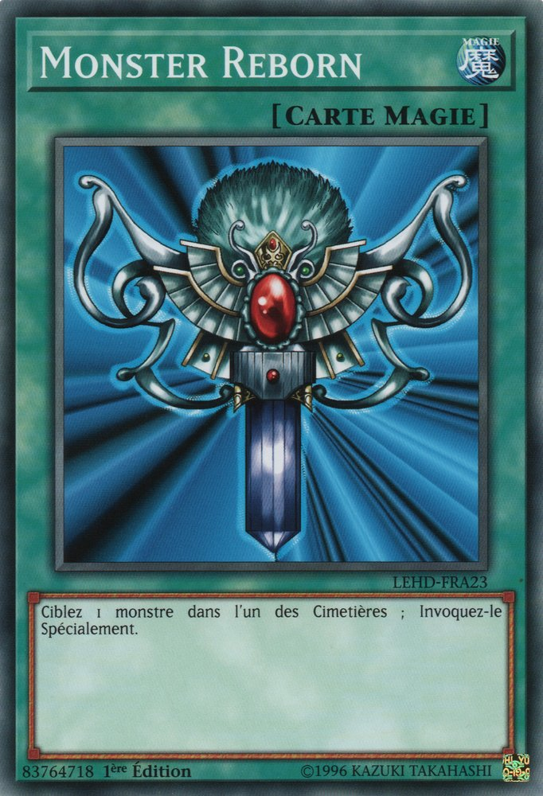 ”
afin de ressusciter “Starve Venom ”
de mon cimetière.
Le dragon maléfique de Yuri est revenu, poussant un rugissement triomphant.
Yuri: Ensuite, je pose 2 cartes face cachées et je termine mon tour.
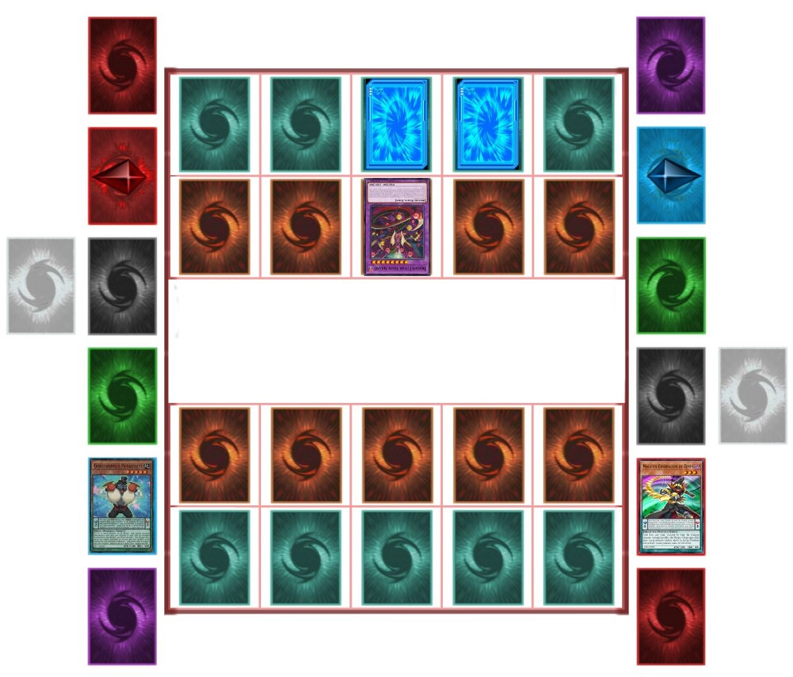
Yuri a ensuite regardé Yuya, qui semblait avoir du mal à se relever.
Yuri: Allez Yuya ! Ne jette pas l'éponge maintenant ! Je viens à peine de commencer à m'amuser !
Il le disait avec un rire cruel.
Yuya avait mal partout, et pas seulement dans sa poitrine.
Yuya: Cette explosion semblait si réelle, comme si je participais à un Action Duel..., sauf que ce n'en n'est pas un. Comment a-t-il pu infliger de vrais dommages ?
Se questionna Yuya. Il s'est à peine mis à genoux et respira lourdement.
Yuri: Qu'est-ce qu'il y a ? Je pensais que tu voulais me tenir éloigné de Yuzu ?
Yuri commença à se moquer de Yuya.
Yuya: Ne t'avise pas... de prononcer son nom !
Yuya rétorqua faiblement en levant les yeux vers lui. Son sosie maléfique ricana.
Yuri: Tant d'inquiétude. Tu es sûr qu'elle n'est que ton amie ?
Yuya le fixa, un regard de colère et de surprise et même temps.
Yuya: Qu'est-ce que... ça a à voir... avec quoi que ce soit là maintenant ?
Yuri haussa les épaules.
Yuri: Je dis juste que. La façon dont tu te bats si fort pour la protéger de moi, avec tant de rage et de détermination... on pourrait croire que tu es amoureux
d'elle. Peut-être es-tu juste trop bête pour t'en apercevoir.
À ces mots, Yuya a recommencé, de façon inattendue, à avoir des pensées de Yuzu à nouveau. À tous les bons moments qu'il a passés avec elle, et à la façon dont elle l'a
aidé à traverser les mauvais moments. Son sourire chaleureux, ses paroles encourageantes, son joli visage... Yuya était choqué de la dernière chose qu'il avait pensé.
Yuya: Est-ce que je viens de penser que le visage de Yuzu était joli ?
Tout en poursuivant son raisonnement, Yuya a commencé à penser à d'autres choses sur Yuzu qu'il n'avait pas remarquées auparavant.
Yuya: Ce n'est pas seulement son visage. La façon dont ses cheveux sont coiffés dans ces nattes. La chaleur et la douceur de ses mains. La façon dont ses yeux
brillent quand elle me voit faire un duel. De plus, elle est toujours mignonne quand elle fait un clin d'œil à son public quand elle gagne un duel. Mais pourquoi ?
Pourquoi est-ce que je ne pense à elle que maintenant, comme ça ?
Il repense alors à la façon dont il l'a vue à son réveil à l'hôpital. Quand il l'a vue, le plafonnier était juste derrière sa tête, cachant tout sauf son visage.
C'était comme regarder le visage d'un ange... son ange...
Yuya: Je vois. C'était ça ! C'est au moment où je l'ai regardée dans cette lumière vive que j'ai commencé à avoir ces pensées bizarres ! Peut-être que Yuri avait raison
sur un point...
Yuya a alors souri et a replacé sa main sur son coeur. Il comprenait maintenant ce qui se passait. Il ne pouvait plus le nier.
Yuya: Je suis... amoureux de Yuzu.
A ce moment, son pendentif s'était mis à briller. Au
même moment, Yuya a eu la vision d'une énorme silhouette. Bien qu'elle était obscurcie par l'ombre, Yuya pouvait voir qu'il s'agissait d'un dragon, et il rugissait
comme s'il voulait apparaître et se battre. Yuya compris cela aussi alors qu'il se remettait enfin sur ses pieds.
Yuya: Eh bien, tu es enfin prêt à continuer, Yuya ? Cela aurait été trop tragique si je t'avais battu aussi facilement.
Yuri le disait joyeusement.
Yuya: Je suis prêt... à te vaincre Yuri !
Yuya le disait fortement, en se préparant pour, peut-être, son dernier tour.
Yuya: Yuzu est la personne la plus importante dans ma vie, et tu ne me l'enlèveras pas ! C'EST MON... TOUR !
Il a crié alors que son pendentif continuait de briller. Il aimait ce qu'il avait piocher.
Yuya: J'ai maintenant ce qu'il me faut pour sauver Yuzu de toi et de ce Professeur pour lequel tu travailles !
Déclara Yuya avec force.
Yuri: Alors, voyons ça ! Ramènes-toi ! Yuri attendait avec impatience de voir ce que Yuya allait essayer ensuite.
Yuya: Tout d'abord, je joue
“Entermate Special ”
. Ceci me permet de faire l'Invocation Spéciale d'un monstre "Entermate" de ma main si je n'ai aucun monstre sur mon Terrain ! J'invoque spécialement
“Entermate Hammer Mammo ” !
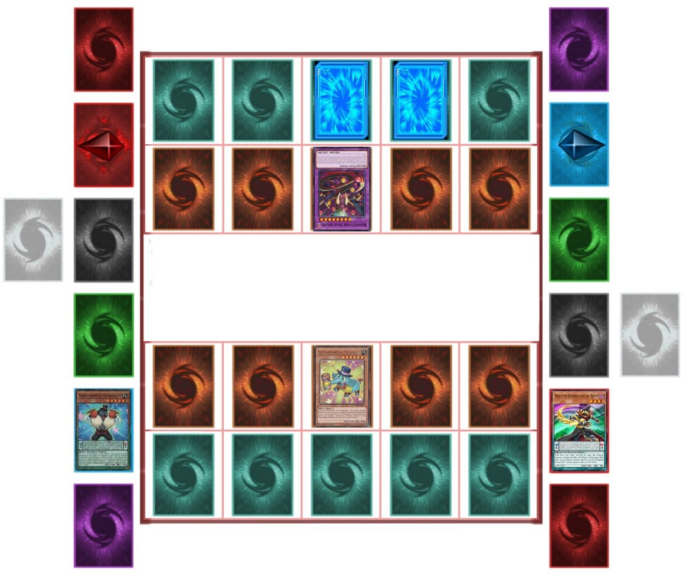
Devant Yuri semblait être un éléphant bleu clair portant un chapeau haut de forme avec un maillet attaché à sa trompe. Il riait jusqu'à ce que ses côtés lui fassent mal.
Yuri: Pfft ! Ha Ha Ha Ha Ha Ha ! Attends... c'est quoi ça ? Ne me dis pas que c'est ça, ta contre-attaque ? Ton minable pachyderme ne peut rien contre “Starve Venom ” ! Il se fera une joie de le dévorer
tout cru ! Yuri se moqua de lui.
Yuya; Ce n'est pas de lui dont tu devrais t'inquiéter. Disait Yuya, faisant cesser le rire de Yuri.
Yuya: Je sacrifie “Hammer Mammo ”
afin de faire l'Invocation Avancée de cette carte. Montre-toi ! Grand dragon né du courage et de la détermination. Que tes ailes majestueuses protègent les plus faibles et que ta
colère puisse détruire les ténèbres.
“Odd Eyes Advance Dragon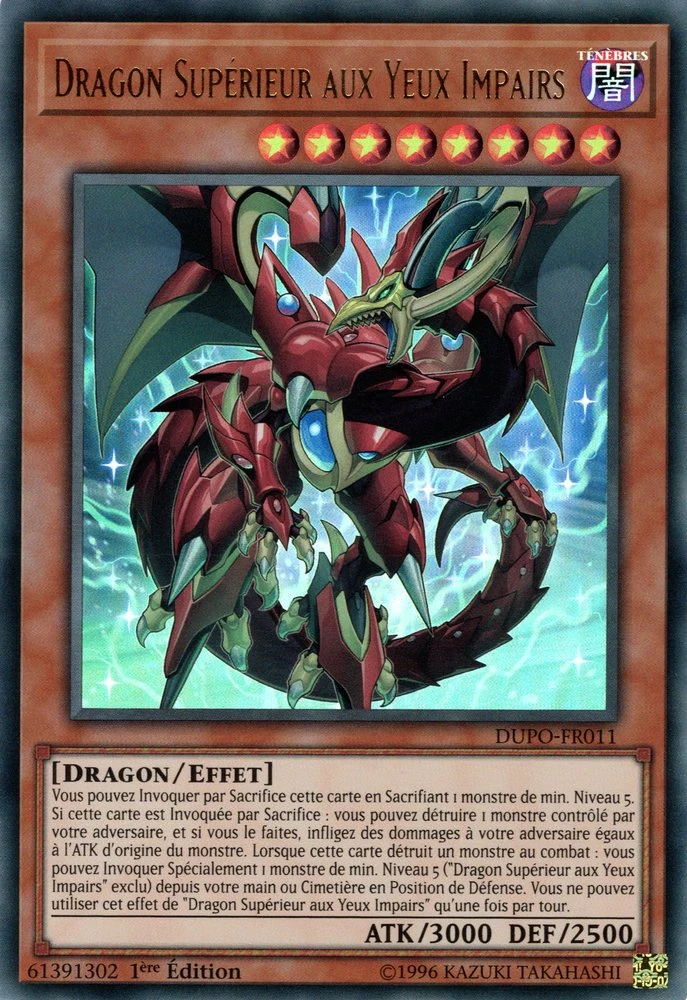 ”
!
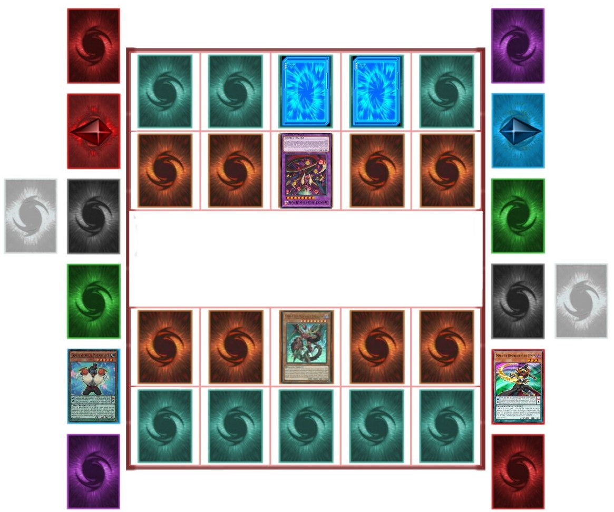
Le nouveau dragon de Yuya ressemblait beaucoup à “Odd Eyes Pendulum Dragon ”,
mais sans ses orbes, il avait des ailes plus semblables à celles d'un dragon et semblait beaucoup plus mature.
Yuri: Maintenant, c'est beaucoup mieux comme ça ! Disait Yuri, étonné.
Yuya: “Odd Eyes Advance Dragon ”
peut-être invoqué de cette façon si je sacrifie un monstre de niveau 5 ou plus, comme mon “Hammer Mammo ”
. De plus, comme il a été invoqué de cette façon, son effet de monstre s'active. Je peux détruire un monstre que tu contrôles et t'infliger des dégâts égaux aux points d'attaque
d'origine de ce dernier ! Maintenant, goûte à ta propre médecine !
Cria Yuya.
Yuri: Quoi !?
Yuri fut obligé de regarder “Starve Venom ”
être détruit une nouvelle fois, en subissant cette fois-ci beaucoup plus de dégâts.
Yuri: Gaaah !
(Yuri: 3400 LP - 2800 LP = 600 LP)
Yuya: Puisque
“Odd Eyes Advance Dragon ”
n'est pas invoqué spécialement, l'effet de
“Starve Venom ”
ne peut pas le détruire ! Je te tiens maintenant !
Déclara Yuya. Yuri grogna.
Yuri: Ne compte pas là-dessus ! Carte Piège activée,
“Living Dead no Yobigoe ”
. Avec ça, je peux ramener un monstre de mon Cimetière en mode Attaque ! Reviens,
“Starve Venom Fusion Dragon ”
!
Yuya serra les dents en voyant que Yuri ramenait encore son dragon.
Yuya: Je n'ai pas fini ! Avec les échelles pendules déjà fixées, je peux encore effectuer une invocation Pendule. Balance toi à nouveau, pendule des âmes ! Dessine
dans le ciel un arc de lumière ! Pendulum Shōkan ! Reviens encore une fois de mon Extra Deck !
“Odd Eyes Pendulum Dragon ”
!
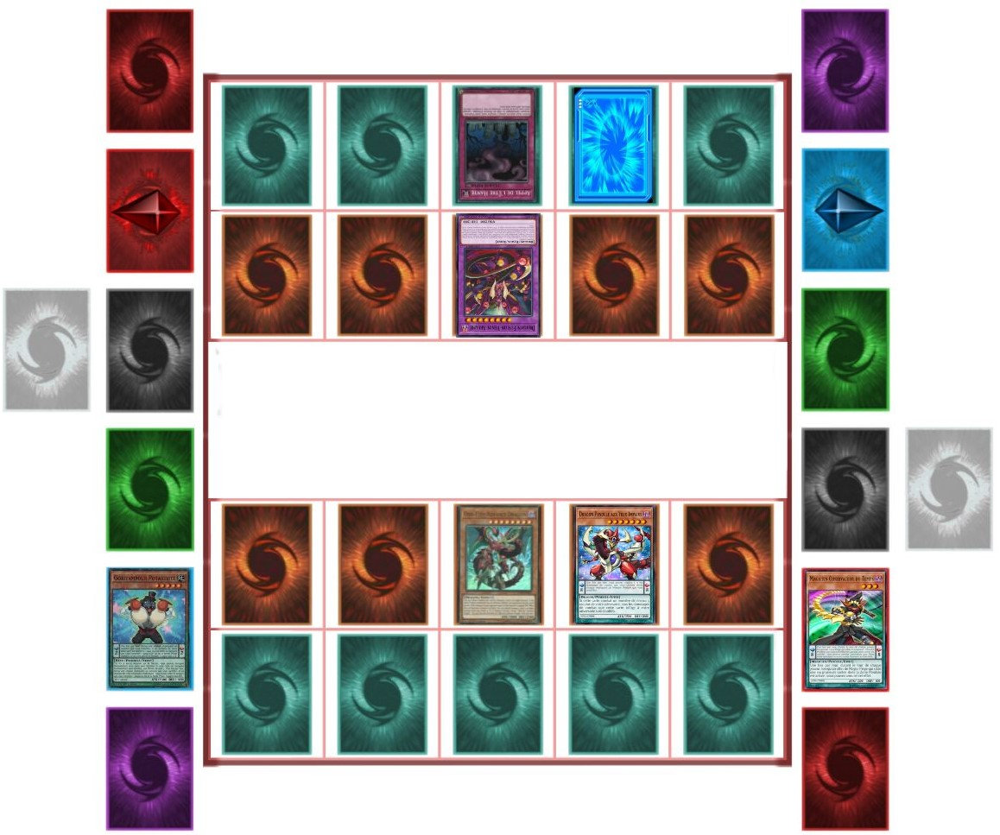
Yuri était surpris de voir que le dragon de Yuya revenait aussi, malgré le fait qu'il l'aie détruit plus tôt.
Yuri: Attends, tu peux invoquer par pendule des monstres depuis ton cimetière !?
Il le disait avec étonnement.
Yuya: “Odd Eyes Pendulum Dragon ”
n'a jamais été dans mon Cimetière ! Lorsqu'un monstre Pendule sur le Terrain est détruit, au lieu d'être envoyé au cimetière, il est placé dans mon Extra Deck ! De là,
tant que je possède les échelles Pendules, je peux faire une Invocation pendule de ce monstre !
Expliqua Yuya.
Yuri était réellement impressionné. Il ne savait pas que la Dimension Standard avait de tels monstres. Mais cela ne changeait rien. Il n'avait pas l'intention de
perdre et d'échouer une nouvelle fois dans une autre mission de capture.
Pour la deuxième fois, le meilleur monstre de Yuya lança une attaque enflammée en direcion du meilleur monstre de Yuri.
Yuya: A cet instant, l'effet Pendulum de
“Drumming Kong ”
s'active de nouveau. Les points d'Attaque de
“Odd Eyes ”
augmentent de 600 !
(Odd-Eyes Pendulum Dragon: 2500 + 600 = 3100 ATK)
Avec ses 3100 points d'attaque, le dragon de Yuya était plus que capable de vaincre le dragon ennemi. Mais...
Yuri: Bien essayé ! J'active un piège continu,
“Dark Seed Planter ”
! Tant que cette carte est active, tous tes Monstres sur le Terrain sont traités comme des Monstres d'attribut TENEBRES.
Yuri expliqua, en activant sa dernière carte face cachée.
Yuya: Quel est l'intérêt de faire ça ? Tous mes monstres sont déjà d'attribut TENEBRES !
Demanda Yuya, confus par le dernier mouvement de son sosie.
Yuri: Il y a mieux. Quand un montre TENEBRES de mon adversaire attaque un monstre TENEBRES que je contrôle, l'attaque de ce monstre est annulée !
“Starve Venom ”
n'ira nul part cette fois-ci !
Disait Yuri en riant à nouveau.
Yuya: Je ne pense pas ! J'active l'effet Pendulum de
“Tokiyomi no Majutsushi ”
! Une fois par tour, lorsque mon adversaire active une carte piège ciblant un de mes monstres Pendulum, et aucune autre carte, je peux annuler l'activation de cette
carte piège et la re-poser sur ton terrain. Inverse Gearwise !
Répliqua ce dernier.
Yuri: Tu te moques de moi !?
Disait Yuri, choqué que son Piège ait été annulé comme ça.
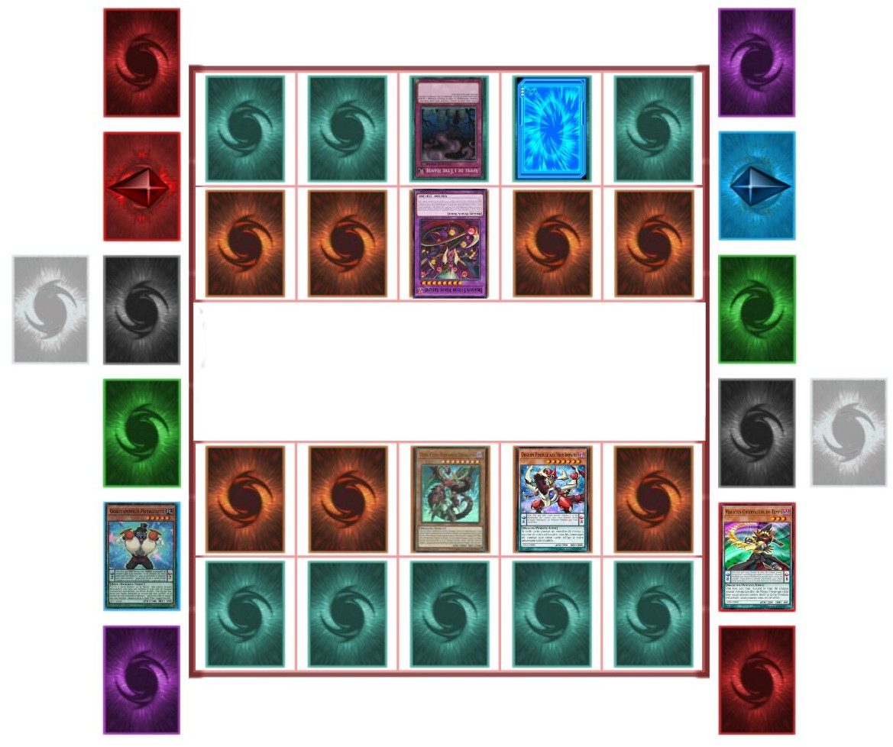
Yuya: Maintenant, l'attaque finale de
“Odd Eyes ”
continue ! Et n'oublie pas son propre effet de monstre ! Lorsque
“Odd Eyes ”
affronte un monstre de niveau 5 ou plus, les dommages de combat qui te seront infligés sont doublés ! C'EST FINI YURI ! REACTION... FORCE !
Alors que Yuri regardait son dragon se faire oblitérer pour la dernière fois, tout ce qu'il pouvait faire... c'était rire.
Yuri: J'ai... perdu ? Ha... Ha Ha... Ha Ha Ha Ha Ha Ha Ha Ha Ha Ha Ha Ha !
Ce dernier éclata de rire alors qu'il est soufflé par la dernière attaque de Yuya et atterrit sur le dos, vaincu.
(Yuri: 600 LP - (300 x 2) LP = 0 LP)
Yuya se tenait là, respirant difficilement et souffrant de ses blessures récentes. Sa poitrine lui faisait toujours le plus mal, mais ce n'était plus aussi grave maintenant.
Yuya: Je l'ai... battu.
Il a ensuite commencé à s'approcher lentement de Yuri.
Du haut d'un arbre, Dennis avait observé l'impensable. Il était tout juste revenu pour assister à la victoire sans précédent de Yuya sur Yuri.
Dennis: Yuri... a perdu ? C'est pas possible !
Il le disait doucement, sous un choc total. D'abord Edo a été forcé de battre en retraite, maintenant ça. Le Professeur serait certainement hors de lui quand il entendra parler de cette histoire.
Quand il a atteint Yuri, ses yeux étaient fermés et il souffrait lui aussi. Il tenait aussi une carte dans sa main. Yuya s'est agenouillé et l'attrapa par son col.
Yuri: Très bien, parle. Pourquoi en as-tu après Yuzu ? Dis-le moi !
Demanda Yuya. Avant que Yuri ne puisse répondre, la carte de Yuri a brillé d'une vive lumière violette. Au même moment, dans un emplacement du Duel Disk de Yuya,
émettait également une lumière vive qui les a enveloppés tous les deux.
Dennis: Hein !? C'est quoi ce... Qu'est-ce qui se passe !?
Dennis a demandé, sa confusion augmentant. Il ne pouvait plus voir Yuya et Yuri, seulement ce dôme de lumière violette qui les recouvrait.
A l'intérieur du dôme, Yuya était toujours agenouillé à côté de Yuri. Il a ouvert les yeux et a regardé Yuya. A la surprise de Yuya, son homologue tordu souria.
Yuri: Bon sang... Tu m'as eu... Je n'arrive pas à croire que j'ai perdu. Qui plus est, contre un type qui me ressemble.
Yuya a refusé de se laisser distraire.
Yuya: Réponds-moi Yuri ! Qu'est-ce que Yuzu a fait pour mériter d'être kidnappée ?
Il demanda avec colère. Yuri a alors gloussé faiblement.
Yuri: Alors là, je n'en sais strictement rien. Je l'ai fait seulement parce que le Professeur me l'a ordonné. Je ne savais pas pourquoi. J'ai juste fait ce qu'on
m'a dit. Si tu veux des réponses, tu devras lui demander.
Répondit Yuri. Yuya grogna de déception.
Yuri: Je pense que, je devrais probablement te remercier.
Yuya: Me remercier ? De quoi ? Yuya a demandé, ne comprenant pas où Yuri voulait en venir.
Yuri: Ces derniers temps, je n'arretais pas d'échouer, et de le décevoir. Et à chaque fois, il était de plus en plus énervé. Une fois qu'il aura entendu parler de ça,
je ne doute pas un seul instant qu'il se débarrassera de moi pour ne pas lui avoir donné ce qu'il désirait. De cette façon, je n'aurai pas à l'affronter. Il est
préférable que ... je ne revienne jamais vers lui.
Il le disait en affichant maintenant un sourire triste.
Yuya: Yuri...
Yuya a dit doucement, sa colère se dissipant. Même s'il le détestait toujours pour avoir planifié la capture de Yuzu, il était aussi désolé de l'entendre parler comme
si sa vie était finie.
Yuri: Je suis vraiment heureux que tu sois la première personne à me battre. Aussi, je pense que tu devrais avoir ceci...
Yuri a alors levé sa main tenant la carte brillante, qui s'est avérée être...
Yuya: “Starve Venom Fusion Dragon ”
?
Yuya a demandé, stupéfait que Yuri lui offre son meilleur monstre.
Yuya: Mais c'est ta carte ! Pourquoi me la donner ?
Yuri a douloureusement haussé les épaules.
Yuri: Parce que... il me dit quelque chose. Tu ne l'entends pas parler ? Tu n'entends pas... ton propre dragon te dire la même chose ?
Yuya était abasourdi par les questions de Yuri. Cependant, en y réfléchissant bien, Yuya a commencé à entendre quelque chose à l'intérieur de son disque de duel et sur
la carte de Yuri. Non seulement il a entendu deux sons distincts, mais à son grand étonnement, il les a aussi compris. Yuya a compris que
“Starve Venom ” voulait être accepté par lui, et que
“Odd Eyes ” voulait
aussi accepter le dragon qu'il avait été forcé de combattre.
Même si rien n'avait encore de sens pour lui, Yuya réalisa qu'il ne pouvait pas ignorer les supplications des deux dragons. Finalement, Yuya a fait son choix et a pris le
“Starve Venom Fusion Dragon ” de Yuri. L'air satisfait,
Yuri dit encore une chose à son sosie avant que sa vie n'expire.
Yuri: Hé, Yuya. Fais-toi une faveur et garde ta petite amie hors de portée. Même si je ne suis plus là, le Professeur n'arrêtera pas de s'en prendre à elle... ou
aux autres. Si tu te bats contre lui avec la même ténacité que tu as utilisée contre moi, alors Yuzu devrait s'en sortir... indemne...
Yuri a souri à Yuya une fois de plus avant que la lumière brillante ne commence à consumer les deux homologues...
Au même moment, le groupe de Yugi a finalement atteint le parc.
Sora: Nous sommes arrivés !
Disait Sora, presque essoufflé. Il ne s'était toujours pas remis de ses blessures.
Yuma: Espérons que Yuya aille bien. Disait Yuma. Un moment plus tard, le bracelet de Yuzu a alors émis une lumière rose vif.
Yuzu: Et maintenant ? Pourquoi mon bracelet brille-t-il comme ça ? Disait Yuzu, surprise. Yugi et les autres, à l'exception de Sora, savaient ce que cela signifiait.
Yugi: Peut-être qu'il n'est pas trop tard après tout
L'autre Yugi l'espérait.
Atem (Yami Yugi): Je l'espère. Attends ! Tu sens ça, Aibou ?
Atem a demandé alors que Yugi et lui ont remarqué que leur puzzle dégageait également une faible lueur.
Yugi: Pourquoi le Puzzle du Millenium brille-t-il aussi ? Est-ce qu'il réagit en quelque sorte au bracelet de Yuzu ?
Demanda Yugi, confus.
Atem (Yami Yugi): Je ne suis pas sûr.
Avant qu'aucun d'entre eux ne puisse comprendre, le puzzle et le bracelet de Yuzu ont cessé de briller et sont redevenus inactifs.
Yuzu: Maintenant mon bracelet s'est arrêté ! Qu'est-ce que ça veut dire ?
Yuzu a demandé à Yugi. Avant qu'il ne puisse dire quelque chose...
Yusei: Là !
Yusei cria. Ils ont tous regardé devant eux et ont finalement repéré Yuya. Il était à genoux sur le sol, seul, le regard perdu dans le vide.
Yuzu: Yuya !
Cria Yuzu. Yuya n'a pas semblé l'entendre et s'est effondré sur le sol. Quand ils l'ont atteint, Yuzu et les autres ont été choqués de voir que Yuya était couvert de
blessures. Cela a vraiment inquiété la fille.
Yuzu: Yuya ? Yuya, réveille-toi ! Est-ce que tu vas bien ? C'est moi, Yuzu ! Réveille-toi Yuya ! YUYA !
Elle hurlait en essayant de secouer son ami pour le réveiller, mais en vain. Il ne répondait pas du tout. Yusei vérifia alors son pouls.
Yusei: Il est vivant, mais il est froid. Nous devons le ramener chez lui.
Astral: Il n'y a aucun signe de Yuri nulle part. Peut-être que Yuzu est arrivé à portée des deux avant que le processus ne soit terminé.
Astral disait après avoir regardé autour de lui.
Judai: Je n'en serais pas si sûr, Astral.
Judai a dit en montrant quelque chose dans la main de Yuya. Yugi a vu ce que c'était et maudissait dans son souffle.
Atem (Yami Yugi): Non. Nous sommes arrivés trop tard...
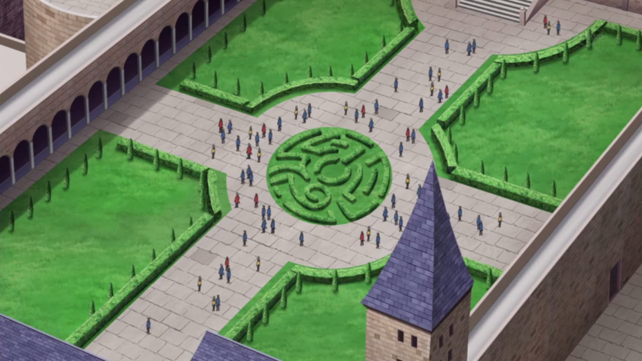
À Academia, un couple d'étudiants se promenait dans la cour quand ils ont vu quelqu'un allongé sur le sol, inconscient.
Etudiant: Hé ! Est-ce que ce type va bien ? Disait le jeune garçon
Etudiante: Je vais m'occuper de lui, va chercher de l'aide !
Répondit la fille qui était avec lui. En hochant la tête, le garçon couru à l'intérieur du bâtiment pour trouver quelqu'un. En attendant l'arrivée des secours, la
fille s'agenouilla et regarda le corps blessé et immobile de Yuri.
Etudiante: Mais qu'est-ce qui t'est arrivé ? Se disait elle à elle même.
 est monté dans sa chambre,
s'est écroulé sur son lit et commença a boudé. Il avait beau dire qu'il allait bien, sa mere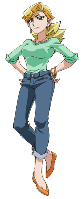
ne voulait pas en entendre parler. Il n'arrivait toujours pas à croire qu'il n'avait pas le droit de faire de duel pendant une semaine entière ! Il se battait en duel depuis des années,
et il n'avait jamais eu de problèmes jusqu'à maintenant. Il avait été élevé pour obtenir un corps athlétique et en bonne santé. Deux qualités nécessaires pour livrer des Actions Duels.
est monté dans sa chambre,
s'est écroulé sur son lit et commença a boudé. Il avait beau dire qu'il allait bien, sa mere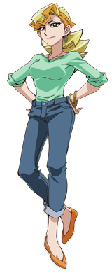
ne voulait pas en entendre parler. Il n'arrivait toujours pas à croire qu'il n'avait pas le droit de faire de duel pendant une semaine entière ! Il se battait en duel depuis des années,
et il n'avait jamais eu de problèmes jusqu'à maintenant. Il avait été élevé pour obtenir un corps athlétique et en bonne santé. Deux qualités nécessaires pour livrer des Actions Duels.


.png)